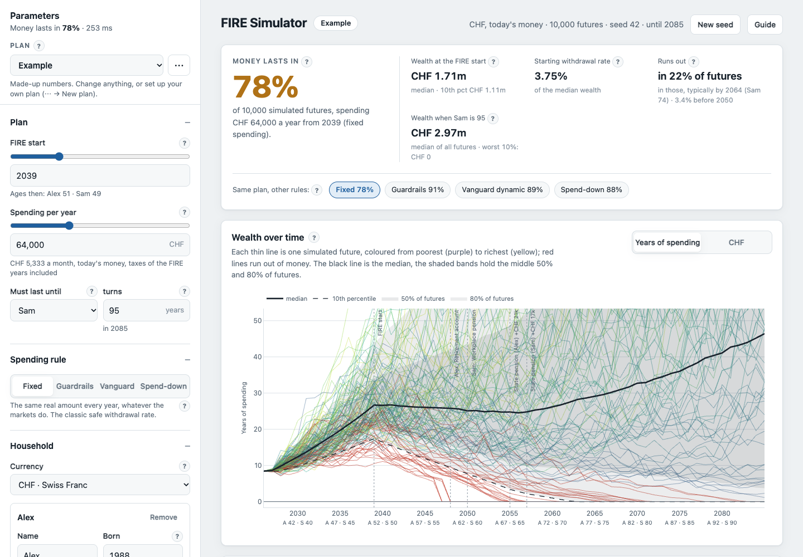

When can I stop?
A Monte Carlo FIRE simulator
How often your money lasts, across 10,000 futures
Pensions, retirement accounts, spending rules
Runs in your browser: nothing leaves your device
whencanistop.fyi
